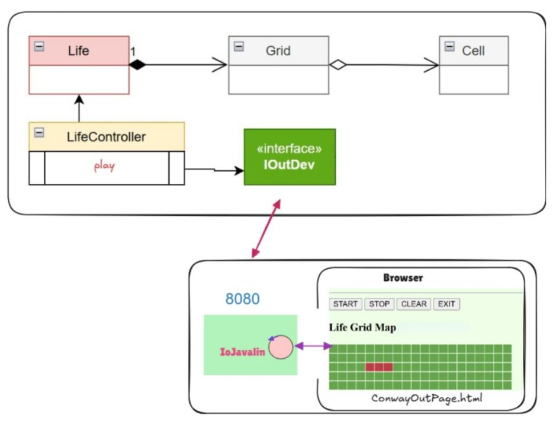

Introduction
Realizzazione in Java del GAME OF LIFE DI CONWAY
Requirements
- Dotare il gioco Life. di una pagina HTML come dispositivo di I/O
- La pagina deve costituire un componente esterno alla applicazione secondo la architettura riportata in IoJavalin esterno alla applicazione.
- Il gestore del gioco sarà l'utente che ha aperto per primo (owner) una pagina HTML collegata al gioco. In altre parole, solo la pagina dell'owner avrà pulsanti di comando START/STOP/CLEAN/EXIT attivi.
- La pagina HTML deve essere aggiornata in modo automatico man mano il gioco procede
- Un utente non owner che si collega mentre il gioco è in corso, dovrebbe vedere lo stato attuale della griglia in modo corretto
- La pagina HTML deve indicare se il gioco continua anche nel caso di griglia vuota o di configurazione stabile
- Il deployment del gioco deve avvenire mediante Docker DA FARE
Problem analysis

A differenza dell'architettura implementata nello Sprint3 in questo Sprint si adotterà un architettura dove il server Javalin e l'applicazione che controlla il gioco di Conway saranno due servizi separati che interagiranno fra di loro. Cambia anche il formato dei messaggi, che sarà quello definito dalla libreria basicomm23. In questa versione è il servizio Javalin a decidere l'id del client.
Test plans
Project
IOutDev è stato implementato con la classe OutInGuiInteractionTesting
Deployment
Il server Javalin è stato containerizzato con Docker. La sua immagine viene costruita con il comando "./gradlew distTar && docker build -t gui26html:1.0 .", e viene eseguita con il comando "docker compose -f conway26GuiHtml.yaml up".Il server di gioco al momento non è containerizzato, ma è eseguibile con il comando "./gradlew runLifeGameInteraction". È necessario eseguire prima il server Javalin, e poi il server di gioco, in quanto il primo è necessario per la comunicazione con il browser, successivamente il gioco sarà accessibile all'indirizzo "http://localhost:8080/".